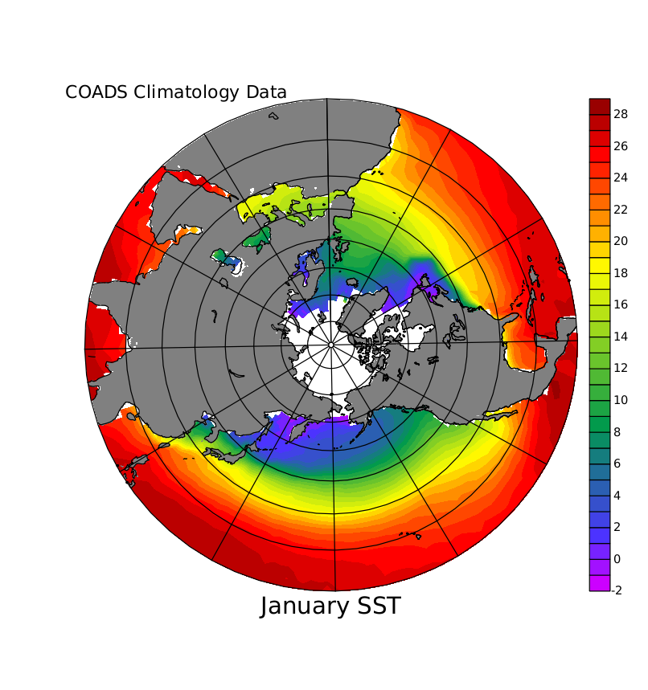

FAQ
Polar Stereographic Plots
Polar Stereographic Plots
Question:
How can I make publication-quality Polar Stereographic Plots?
Example:

The plots shown in this FAQ are made with PyFerret, using the arial font and saved as .png images
> pyferret yes? set text/font=arial yes? ... ! continuing with the commands shown below. ... yes? FRAME/file=plotfile_name.png
For an introduction to the map projection scripts, run
yes? go mp_demo
Scripts such as mp_aspect, mp_fland, mp_land, mp_graticule, and mp_label are tools for customizing map projection plots. The above figure was made with these commands:
SET WIN/SIZ=0.6 PPL dfltfnt CR USE coads_climatology SET grid sst ! Define a region in the northern hemisphere. SET REGION/X=0:360/Y=11:90/L=1 ! Set up the map projection parameters and apply the ! correct aspect ratio. GO mp_stereographic_north 180 50 GO mp_aspect LET masked_sst = sst * mp_mask ! Plot the data, add land mask and land outline FILL/NOAXES/NOLAB masked_sst, x_page, y_page GO mp_fland 20 GO mp_land ! Mark latitude and longitude with a graticule. GO mp_graticule ! Add labels in world coordinates. go mp_label 10 10 1 0 .15 "COADS Climatology Data" go mp_label 180 6 0 0 0.2 "January SST"
The next plot illustrates more techniques using a section of the hemisphere.The Ferret command script to create the plot is mp_stereo_demo.jnl.

Reference Material:
There are a number of helpful scripts that will let you control the appearance of plots that use map projections. To see a list of the scripts with brief descriptions, at the system prompt type
> Fgo "mp_"
They are also listed in the Users Guide, Chapter 1, "Go Tools". See "map projection scripts" in the index.
Please also see these related FAQ's:
- How do I create map projections with Ferret?
- How can I get the right aspect ratio for a plot when I'm using a map projection and a sub-global region?
- How can I get the right aspect ratio for map projections in viewports?
- How can I put my curvilinear coordinate data in a map projection?
- All I want to do is plot a ship track with a particular map projection.
- How does Ferret generate boundaries for the curvilinear (3-argument) shade command?